Лісові екосистеми
Ліси є легенями планети. Вони забезпечують кисень та є домівкою для безлічі видів тварин.
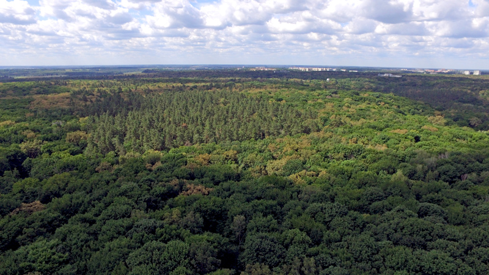Водні екосистеми
Океани, річки, озера та болота відіграють критичну роль у підтримці кліматичного балансу та забезпеченні питною водою.
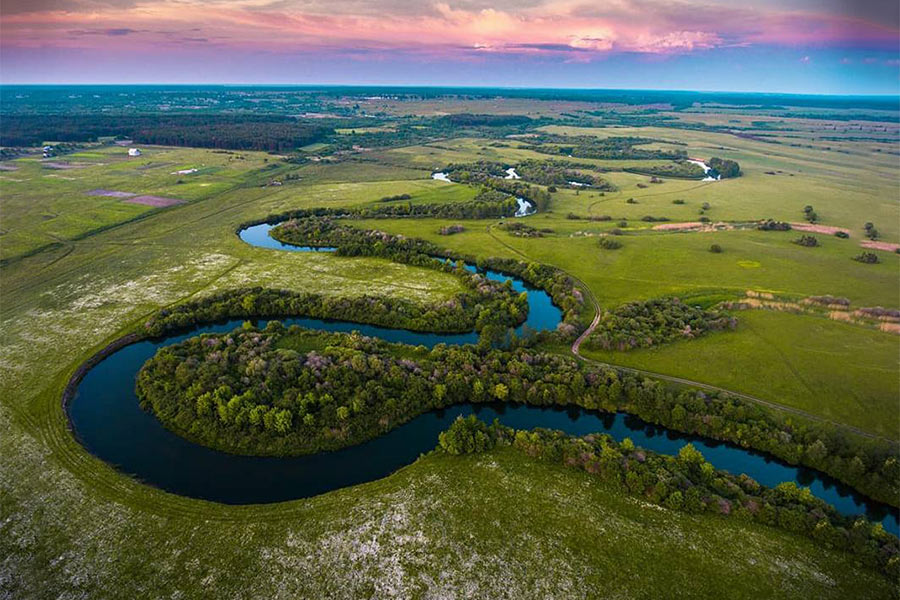Пустельні екосистеми
Попри складні умови, пустелі є домівкою для унікальних рослин і тварин, пристосованих до виживання в екстремальних умовах.
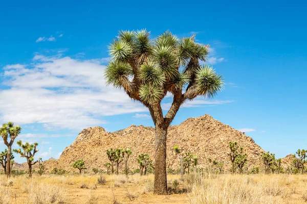Тундрові екосистеми
Тундри — це холодні території з коротким літнім сезоном, де ростуть лише найвитриваліші рослини.
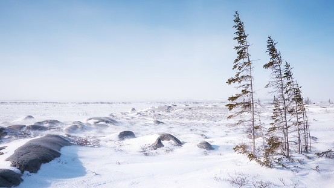Савани
Трав'янисті рівнини з розкиданими деревами, що є середовищем проживання слонів, левів та антилоп.
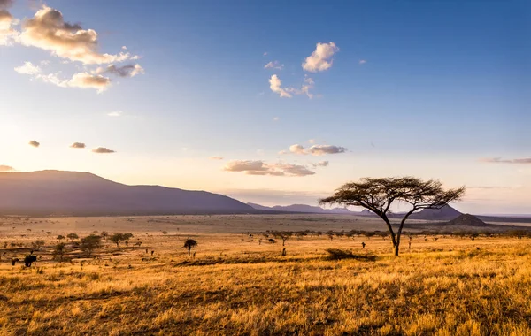Степи
Просторі рівнини з трав'яним покривом, де мешкають степові орли, сурикати та лисиці.
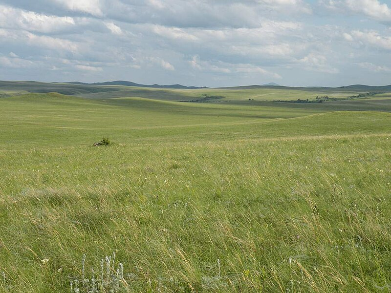Мангові ліси
Прибережні екосистеми, що захищають узбережжя від штормів та є домівкою для багатьох видів риб.
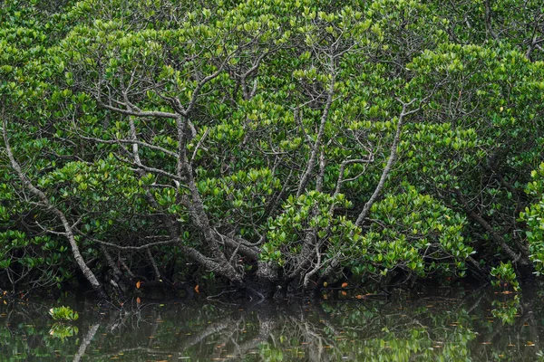Коралові рифи
Одна з найбагатших за біорізноманіттям морських екосистем, що забезпечує притулок для тисяч морських видів.
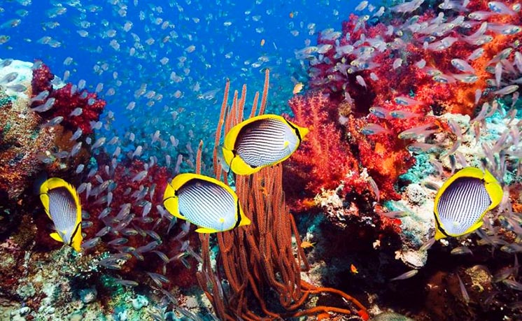Озерні екосистеми
Прісноводні водойми, що є джерелом води та середовищем існування багатьох видів риб і птахів.
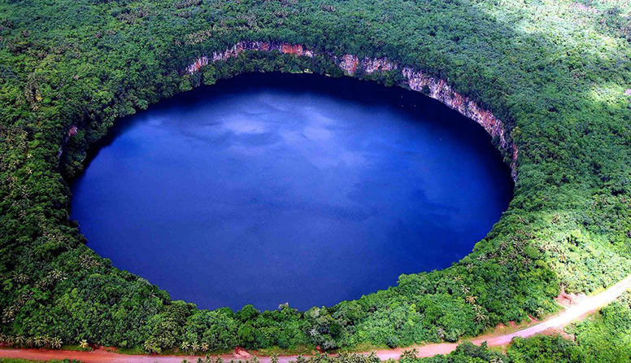Річкові екосистеми
Включають потоки та річки, що відіграють важливу роль у транспортуванні поживних речовин та води.
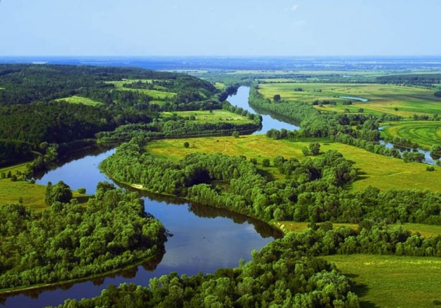Альпійські луки
Гірські екосистеми з різноманітною флорою та фауною, що пристосовані до суворого клімату.
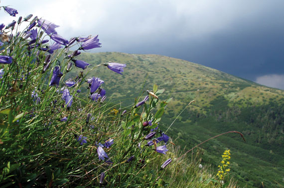Вулканічні острови
Унікальні території, сформовані вулканічною активністю, з багатою ендемічною флорою та фауною.
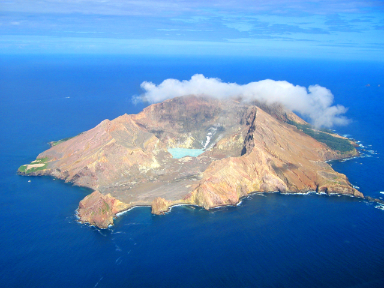Чорноземні екосистеми
Родючі рівнини з багатими ґрунтами, що ідеальні для сільського господарства.
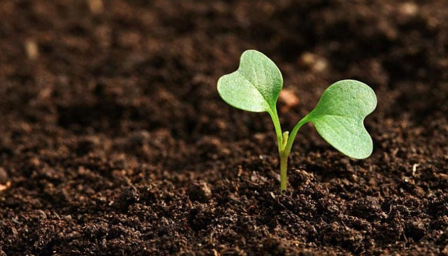Бамбукові ліси
Характерні для Китаю та Японії, вони є головним середовищем існування панд.
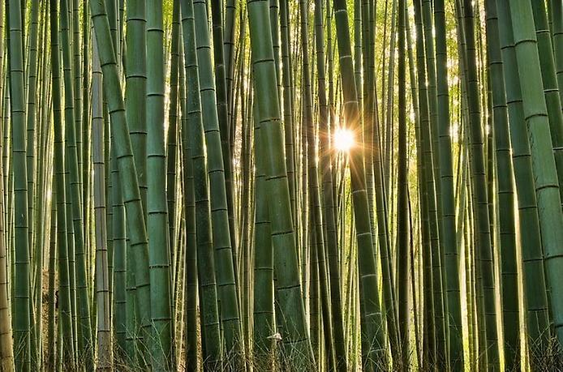Арктична екосистема
Крижаний світ, де живуть полярні ведмеді, моржі та кити.
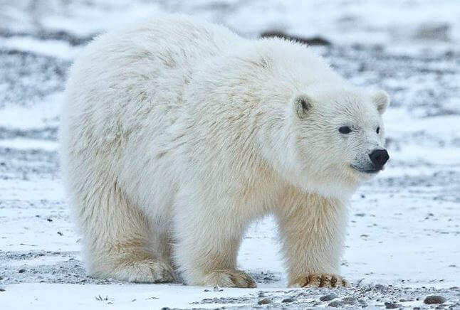Антарктична екосистема
Домівка для пінгвінів та морських котиків, одна з найбільш екстремальних екосистем.
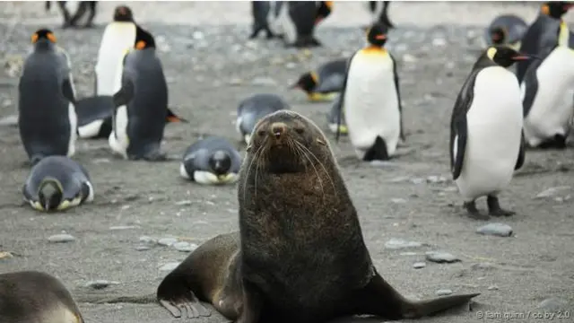Тропічні болота
Болота з густою рослинністю, що забезпечують середовище існування алігаторів та змій.
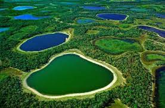Морські глибоководні екосистеми
Зона, куди не проникає сонячне світло, де мешкають глибоководні риби та гігантські кальмари.
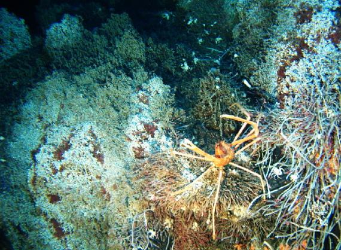